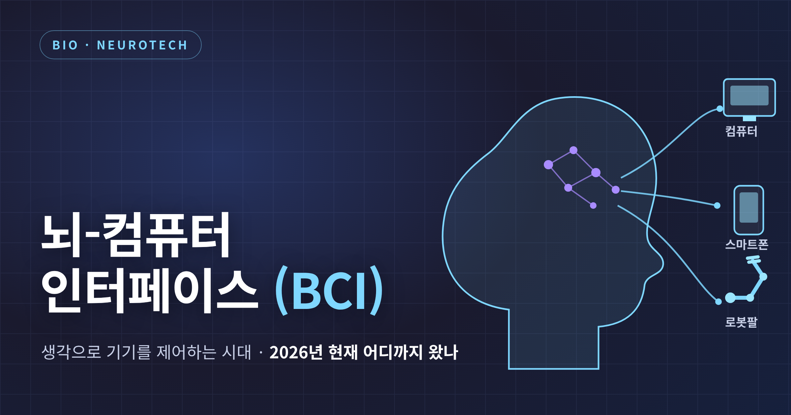
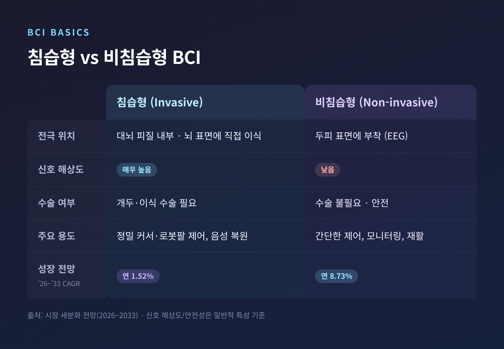
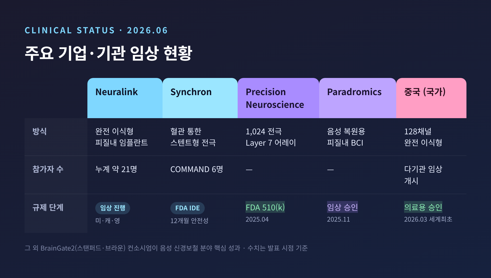
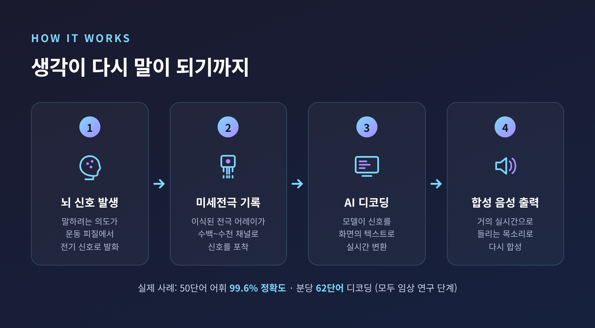
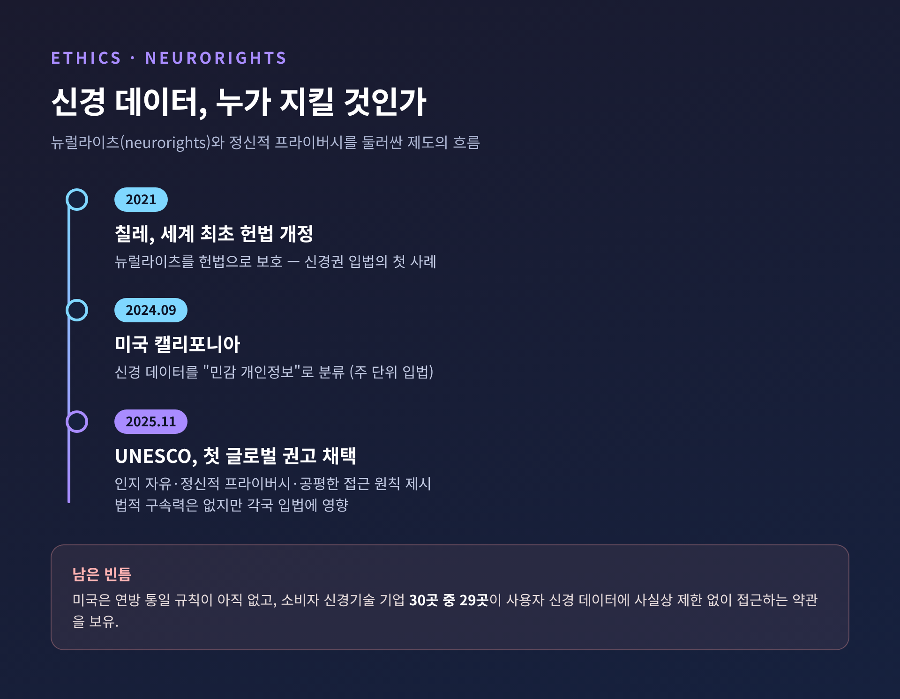

[바이오] 뇌-컴퓨터 인터페이스(BCI), 생각으로 기기를 제어하는 시대 — 2026년 현재 어디까지 왔나

이번 글에서는 뇌-컴퓨터 인터페이스(BCI)가 2026년 현재 어디까지 왔는지를 정리해 보겠습니다.
먼저 결론부터 말씀드립니다. BCI는 더 이상 실험실 안의 이야기가 아닙니다. 생각만으로 컴퓨터와 로봇팔을 제어하는 환자가 이미 존재하고, 시장도 빠르게 커지고 있습니다. 다만 기술이 앞서가는 만큼, 안전성과 신경 데이터 프라이버시라는 숙제가 함께 따라온다는 점도 짚어야 합니다.
아래에서는 BCI의 원리, 주요 기업들의 임상 현황, 실제 환자 사례, 그리고 윤리 쟁점까지 차례로 살펴봅니다. 의료와 관련된 내용은 모두 임상 연구 단계의 결과이며, 일반 진료에 보급된 표준 치료가 아니라는 점을 미리 말씀드립니다.
BCI란 무엇인가 — 침습과 비침습
BCI는 뇌의 전기 신호를 읽어 컴퓨터나 기기를 제어하고, 반대로 뇌에 신호를 전달하기도 하는 기술입니다.
신호를 어디서 읽느냐에 따라 크게 두 갈래로 나뉩니다.
하나는 침습형입니다. 미세 전극을 대뇌 피질 안에 직접 심거나 뇌 표면에 올려 신호를 기록합니다. 전극이 뇌에 직접 닿기 때문에 신호 품질이 매우 높습니다. 정밀한 커서 제어, 로봇팔 제어, 음성 복원 같은 고난도 응용에 유리합니다. 최근에는 무선·완전 이식형 시스템이 등장하면서 임상에서의 실용성이 크게 높아졌습니다.
다른 하나는 비침습형입니다. 두피에 전극을 붙여 뇌파(EEG)를 측정하는 방식이 대표적입니다. 수술이 필요 없어 안전하지만, 신호 해상도는 낮습니다.
예전엔 정해진 신호를 한 방향으로만 읽는 개방형 시스템이 중심이었습니다. 지금은 뇌와 기기가 실시간으로 주고받는 폐쇄형·적응형 방식으로 무게중심이 옮겨가고 있습니다. 여러 신호를 함께 묶는 멀티모달 방식으로 성능을 끌어올리는 흐름도 뚜렷합니다.
흥미로운 점은 성장 속도입니다. 시장 세분화 전망을 보면 비침습 BCI가 2026~2033년 연 8.73% 성장으로 침습형(1.52%)보다 빠를 것으로 예측됩니다. 안전성과 접근성의 강점이 반영된 결과로 보입니다.

누가 어디까지 와 있나 — 주요 기업 임상 현황
2026년 6월 현재, 여러 기업과 연구기관이 임상 단계에 들어서 있습니다.
가장 널리 알려진 곳은 일론 머스크의 Neuralink입니다. N1 임플란트는 완전 이식형 피질내 BCI로, 척수손상이나 루게릭병 같은 중증 신경질환자가 생각만으로 기기를 제어하도록 돕는 것을 목표로 합니다. 2026년 기준 임상시험 참가자는 누계 약 21명으로 발표됐습니다. 미국·캐나다·영국에서 진행 중이며, 참가자들은 컴퓨터와 스마트폰, 로봇팔을 일상에서 제어하고 있습니다.
첫 인간 이식자인 놀란드 아르보 씨는 사지마비 환자입니다. 신경 신호만으로 커서를 옮기고 인터넷을 검색하며 게임을 하게 됐습니다. 초기에 전극 실이 뇌에서 일부 후퇴하는 문제가 있었지만, 소프트웨어 보정으로 안정화했다고 보고됐습니다.
영국에서는 2025년 10~12월 런던 UCLH 국립신경병원에서 7명이 수술을 받았습니다. 다이빙 사고로 사지를 쓰지 못하게 된 의대생 세바스티안 고메즈 씨가 생각만으로 컴퓨터와 휴대폰을 쓰게 된 사례가 소개됐습니다. Neuralink는 시각 복원 임플란트 Blindsight도 준비하고 있는데, 2024년 9월 FDA 혁신의료기기로 지정받았고 첫 인간 이식이 2026년에 계획돼 있습니다.
Synchron은 접근법이 다릅니다. 두개골을 열지 않고 혈관을 통해 스텐트형 전극을 뇌혈관에 삽입합니다. 영구 이식형 BCI로는 처음으로 FDA IDE를 받은 COMMAND 연구를 진행했는데, 2024년 말 발표된 12개월 안전성 결과에서 환자 6명, 중대한 이상반응 0건, 기기 전개 성공률 100%, 개두술 0건을 기록했습니다. 2025년 11월 마감한 2억 달러 규모 투자를 바탕으로 2026년 핵심 임상시험을 준비하고 있습니다.
이 외에도 Precision Neuroscience는 1,024개 전극을 쓰는 Layer 7 어레이로 2025년 4월 FDA 510(k) 인가를 받았고, Paradromics는 2025년 11월 음성 복원용 BCI 임상 연구를 승인받았습니다. 스탠퍼드·브라운대 등이 참여하는 BrainGate2 컨소시엄은 음성 신경보철 분야에서 핵심 성과를 내고 있습니다.
한 가지 더 짚을 곳은 중국입니다. 2026년 정부 업무보고에 BCI가 공식 포함될 만큼 국가 차원에서 육성하고 있습니다. 2026년 3월에는 세계 최초로 침습형 BCI 제품이 임상시험을 넘어선 의료용으로 승인돼, 척수손상으로 사지가 마비된 일부 환자에게 제공되기 시작했습니다. 5월에는 베이징 톈탄병원 주도로 128채널 완전 이식형 BCI의 첫 다기관 임상시험이 시작됐습니다.

실제 환자에게 무슨 일이 일어났나
수치보다 먼저, 사람의 이야기를 떠올리게 됩니다.
말을 잃은 사람이 다시 말하게 된 사례부터 보겠습니다. 한 ALS 환자는 50단어 어휘에서 단어 오류율 9.1%로, 분당 62단어 속도로 시도된 말을 디코딩하는 데 성공했습니다. 이전 기록의 약 3.4배에 해당하는 속도입니다.
정확도도 눈에 띕니다. 한 시스템은 첫 세션 30분 만에 50단어 어휘에서 99.6% 단어 정확도를 달성했고, 추가 학습 데이터로 이식 후 8.4개월간 97.5% 정확도를 유지했습니다.
2025년에는 자연스러움이 더해졌습니다. UC버클리와 UCSF 연구팀은 음성 신경보철의 고질적인 지연 문제를 AI 모델링으로 풀어, 뇌 신호를 거의 실시간으로 들리는 음성으로 합성하는 방식을 내놓았습니다. 같은 해 6월에는 UC데이비스에서 BrainGate2에 참여한 ALS 환자가 미세전극 어레이를 이식받아 실시간으로 "말하는" 데 성공했습니다. 앞서 2024년에는 브라운대에서 ALS로 말을 잃은 남성이 BCI로 다시 말하게 된 사례가 보고됐습니다.
운동 기능 쪽에서도 진전이 있었습니다. 마비 후 신경보철로 빠르고 자연스러운 양손 타이핑을 복원한 연구가 Nature Neuroscience에 발표됐습니다.
다만 한 가지는 분명히 해두고 싶습니다. 위 사례들은 모두 임상 연구의 결과입니다. 병원에 가면 누구나 받을 수 있는 표준 치료가 아니며, 아직 완벽하지도 않습니다. 그럼에도 "말을 되찾았다"는 한 문장이 갖는 무게는 가볍지 않습니다.

시장은 얼마나 커지고 있나
숫자도 함께 보겠습니다. 다만 시장 규모 추정은 조사기관마다 방법론이 달라 편차가 큽니다. 단일 수치보다 범위로 이해하시길 권합니다.
| 구분 | 추정치 | 출처 |
|---|---|---|
| 2026년 시장 규모 | 약 27.5억 달러 | Coherent Market Insights |
| 2030년 전망 | 65.2억 달러, CAGR 18.15% | Grand View Research |
| 2035년 전망 | 약 138.6억~150.4억 달러 | Precedence / Towards Healthcare |
성장 동력은 비교적 또렷합니다. 마비·뇌졸중·ALS처럼 신경보철 기기가 필요한 질환의 증가, 고령 인구의 증가, 그리고 환자의 소통과 운동을 돕는 기술의 발전입니다.
빛이 밝은 만큼 그늘도 깊다 — 안전성과 윤리
좋은 소식만 전하면 균형이 맞지 않습니다. 짚어야 할 한계도 있습니다.
먼저 안전성입니다. FDA가 침습형 BCI에서 주목한 위험은 적지 않습니다. 리튬 배터리 안전, 임플란트의 두개골 내 이동, 전극 실의 생체적합성과 장기 안정성, 데이터 보안과 무선통신 신뢰성, 그리고 감염·출혈 같은 수술 합병증입니다. 실제로 Neuralink 첫 환자에게 전극 실 후퇴 문제가 있었습니다. 다만 수술 기법을 개선한 뒤로는 재발하지 않았다고 보고됐습니다.
더 무거운 쟁점은 신경 데이터입니다. 내 뇌에서 나온 신호를 누가 갖고, 어떻게 쓰는가의 문제입니다.
UNESCO는 2025년 11월 신경기술 윤리에 관한 첫 글로벌 권고를 채택했습니다. 법적 구속력은 없지만, 인지 자유와 정신적 프라이버시, 공평한 접근 같은 원칙을 제시하며 각국 입법에 영향을 주고 있습니다. 칠레는 2021년 세계 최초로 헌법을 개정해 뉴럴라이츠를 보호했고, 미국 캘리포니아는 2024년 9월 신경 데이터를 "민감 개인정보"로 분류했습니다.
그러나 빈틈은 여전합니다. 미국은 주별로 보호법이 누더기처럼 형성되는 중이고, 연방 차원의 통일된 규칙은 아직 없습니다. 한 조사에서는 소비자 신경기술 기업 30곳 중 29곳이 사용자의 신경 데이터에 사실상 제한 없이 접근할 수 있는 약관을 갖고 있었습니다.
그래서 시각이 갈립니다. 기술 속도가 제도를 앞질러 신경 프라이버시 보호는 이미 되돌리기 어렵다는 비관론이 한쪽에 있습니다. 다른 한쪽에는 UNESCO 권고와 칠레 헌법, 미국 주별 입법처럼 제도적 대응이 빠르게 형성되고 있으니 보호 장치를 갖춰 나갈 수 있다는 시각이 있습니다. 어느 쪽이 옳다고 단정하기는 이릅니다.

끝으로 한 마디만 더 드리겠습니다.
BCI는 누군가에게는 잃어버린 목소리를 되찾는 기술입니다. 동시에 우리 모두에게는 "생각마저 데이터가 되는 시대"를 묻는 질문이기도 합니다.
기술이 어디까지 왔느냐고 물으신다면, 이미 생각으로 기기를 움직이는 사람이 있다고 답하겠습니다. 다만 그 신호를 누가 지킬 것이냐는 물음에는, 우리 모두가 아직 답을 찾는 중이라고 덧붙이고 싶습니다.